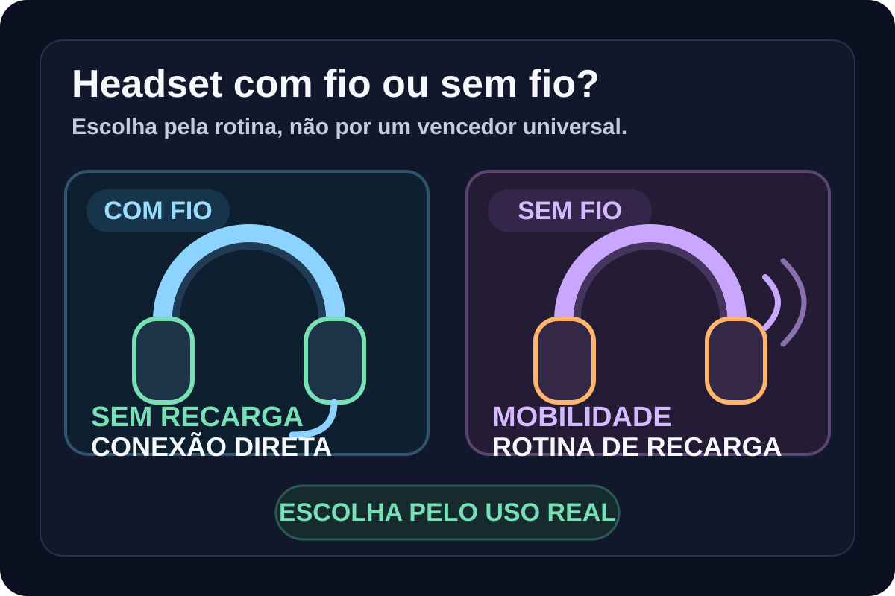

Headset gamer com fio ou sem fio: qual faz mais sentido para você
Comparativo por mobilidade, autonomia, compatibilidade e praticidade para decidir entre conexão com fio e sem fio sem depender de promoções momentâneas.

A escolha começa pela rotina, não pela tecnologia
Headsets com fio e sem fio podem entregar boa experiência, mas resolvem necessidades diferentes. O fio elimina a gestão de bateria e tende a simplificar o uso entre dispositivos compatíveis; o sem fio reduz cabos e permite se afastar da mesa durante a sessão.
- mobilidade
- necessidade de recarga
- compatibilidade
- organização da mesa
Com fio: simplicidade e compatibilidade ampla
Como exemplo de arquitetura com fio, o HyperX Cloud III aceita conexão de 3,5 mm e também USB-A e USB-C. Esse tipo de combinação é útil para quem alterna entre PC, consoles e dispositivos móveis e prefere não depender de bateria.
- 3,5 mm
- USB-A
- USB-C
- uso multiplataforma
Sem fio: liberdade em troca de uma nova variável
Como exemplo atual de arquitetura sem fio, o HyperX Cloud III S Wireless oferece conexão de 2,4 GHz, Bluetooth e Instant Pair em notebooks OMEN compatíveis. A HyperX declara até 120 horas em 2,4 GHz, medidas com reprodução contínua a 50% do volume; o resultado real varia com uso e capacidade da bateria. A troca continua a mesma: menos cabos, mas recarga e modos de conexão passam a fazer parte da decisão.
- 2,4 GHz
- Bluetooth
- autonomia declarada
- rotina de recarga
Qual perfil combina com cada formato
Se o headset quase nunca sai da mesa e você quer o fluxo mais simples possível, o fio pode ser a escolha racional. Se mobilidade e uma mesa sem cabos pesam mais, o sem fio pode justificar a necessidade de recarga. A decisão final deve considerar também conforto, microfone e compatibilidade com o equipamento que você já usa.
Opções comerciais em validação
Os links permanecem desativados nesta prévia até os gates de segurança, destino e release serem concluídos.